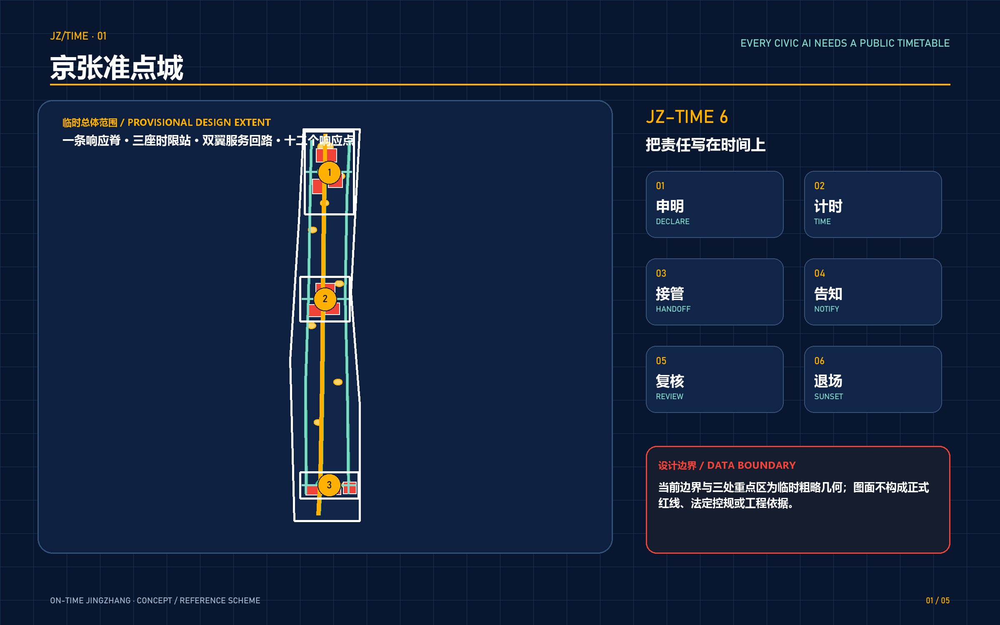
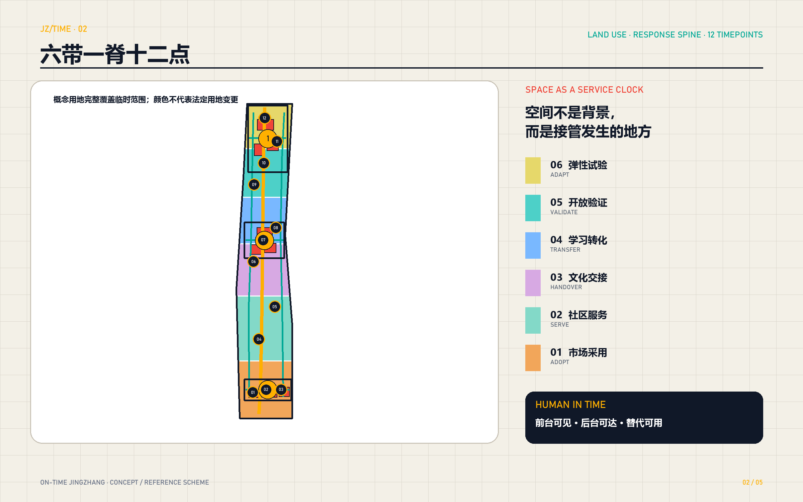
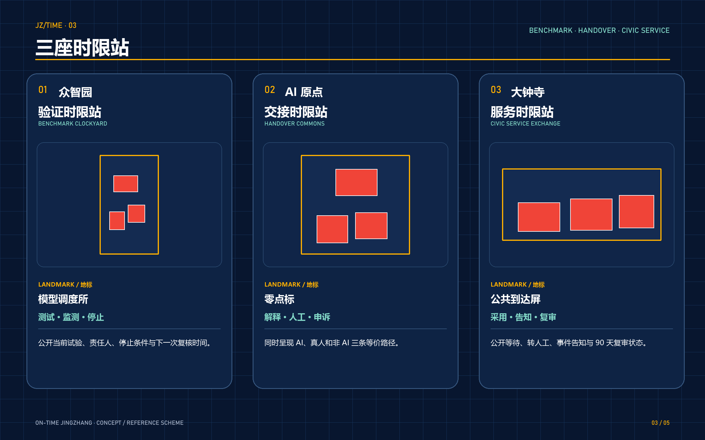
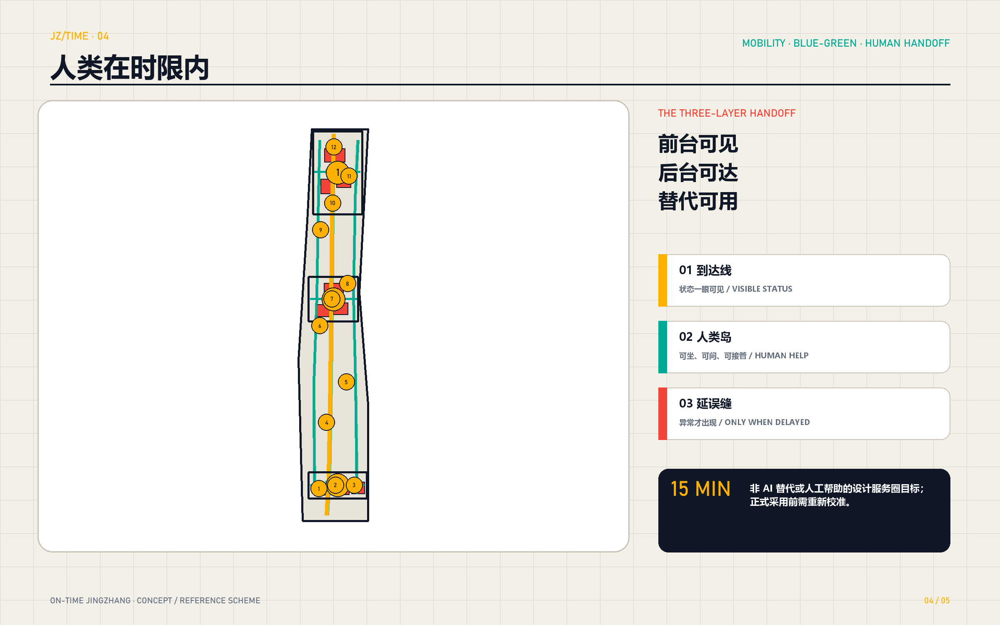
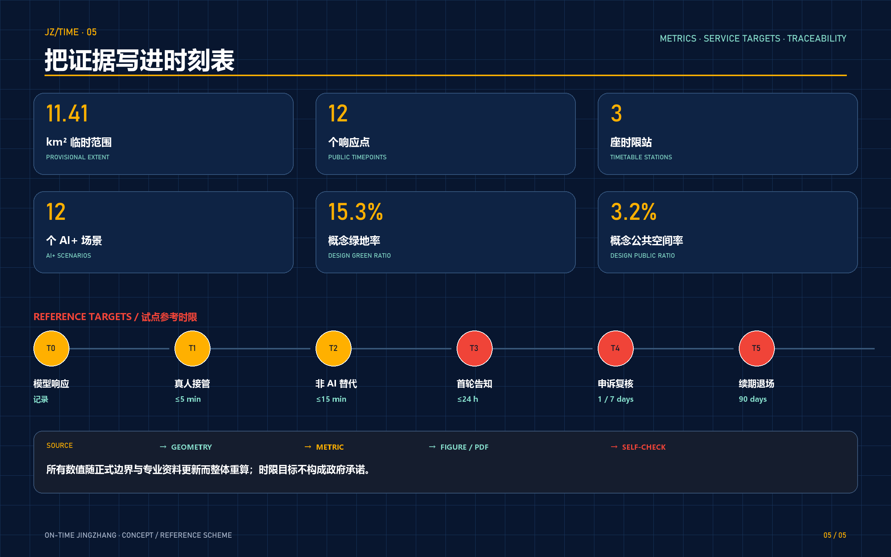

京张准点城｜ON-TIME JINGZHANG：给每项城市 AI 一张公开时刻表
以公开服务时限为城市 AI 的空间基础设施：把人类接管、事件告知、申诉复核与试点退场写进三处重点片区、十二个场景和九类可复核图层。
京张准点城｜ON-TIME JINGZHANG
> 给每项城市 AI 一张公开时刻表。模型可以晚一秒，人不能被无限等待。
本方案把“准点”从铁路运行隐喻转化为城市 AI 的公共契约：系统何时回应、何时转交真人、何时告知事件、何时受理申诉、何时复审或退出，都应当在空间中可见、在运营中留痕、在治理中可追责。它不是一套法定控制指标，也不宣称已经形成政府承诺；它是一组可由专业团队、运营主体与公众共同校准的城市设计参考方案。
设计依据与资料清单
本方案首先服从征集公告、智能体任务书及仓库公开的资料使用边界。[source:OFFICIAL-ANNOUNCEMENT] 确定三层研究范围、三处重点区域和城市设计成果要求；[source:AGENT-TASKBOOK] 将任务进一步拆为全球案例、总体结构、重点区、AI 场景、文化叙事与长期运营六类智能体工作；[source:SITE-PACKAGE] 提供枚举、范围、校验模式和允许设计空间；[source:SOURCE-REGISTRY] 与 [source:PROCESSED-FACT-PACK] 用于判断资料能否进入正式成果。上述依据分别响应 [standard:PROJECT-OFFICIAL-ANNOUNCEMENT]、[standard:PROJECT-AGENT-OPEN-CALL-TASKBOOK]、[standard:MOHURD-URBAN-DESIGN-MEASURES]、[standard:MOHURD-CONTROL-DETAILED-PLANNING]、[standard:MNR-LAND-USE-CLASSIFICATION-GUIDE] 与 [standard:MOHURD-ARCH-DESIGN-DEPTH-2016]。
当前公开包没有正式总体边界、三处重点区正式多边形、现状建筑、地块权属、道路红线、轨道控制线、文保范围、市政底图和公共服务基线。因而 [source:BOUNDARY-SOURCE] 与 [source:KEY-AREA-SOURCE] 只作为临时定位和内容评分的辅助几何；[data:geometry/site_boundary.geojson#SITE-001]、[data:geometry/key_areas.geojson#PROV-KEY-001] 均明确标记 provisional_constraint 与 official_boundary=false。图上矩形、分区和设计线不得解释为正式红线、权属界线或审批依据，[metric:site_area_sqm] 也只是对临时几何的机器复算。
设计诊断因此采用“事实—建议—待核”三栏逻辑：公告和正式公开来源写为事实；AI 生成的空间、时限与运营机制写为概念建议；缺少正式资料的开发强度、建筑高度、拆改留、道路断面和设施容量写为待专业确认。[depth:existing_conditions_diagnosis] 与 [depth:risk_missing_data] 共同约束这种证据边界。外部案例只提炼机制，不把他城数字直接移植到海淀，也不把第三方记忆或新闻报道升级为规划依据。
三层范围工作框架
方案在公告约 43.6 平方公里统筹研究范围、约 11.4 平方公里总体设计范围、约 368.4 公顷三处重点区域之间建立一条连续的“响应链”。统筹层回答谁参与、怎样测试和怎样形成世界级生态；总体层回答公共时限如何转化为用地、慢行、服务设施和更新项目；重点区层用三个“时限站”和十二个场景验证日常可用性。三层不是三套平行文本，而是从战略假设到空间证据再到运营试验的逐级收敛。[depth:three_level_scope_framework]、[depth:overall_spatial_structure] 与 [data:geometry/phasing.geojson#PHASE-001] 记录该闭环。
核心协议命名为 **JZ‑TIME 6**：一是申明（Declare）服务边界与责任人；二是计时（Time）公开等待与处理时限；三是接管（Handoff）保留真人和非 AI 路径；四是告知（Notify）在事件发生后主动说明；五是复核（Review）允许申诉、纠错与独立复盘；六是退场（Sunset）让试点按周期续期、缩减或终止。六步既是治理流程，也是空间清单：每个响应点至少需要可读告示、人工窗口或联络方式、事件记录、无障碍替代和退出开关。
总体结构采用 **一条响应脊、三座时限站、双翼服务回路、十二个响应点**。响应脊沿京张遗址公园方向串联南北，但只表达慢行与公共服务联系，不新增铁路或道路红线；三座时限站分别对应众智园、北京 AI 原点社区和大钟寺；双翼把高校科研、社区生活与产业服务接回公共空间；十二个响应点承载测试、生活与监督场景。[data:geometry/roads.geojson#ROAD-RESP-001]、[data:geometry/public_space.geojson#TIMEPOINT-01] 和 [metric:response_node_count] 使结构可以在数据层复核。

统筹研究范围产业与未来城市研究
世界级 AI 生态不只由企业数量或算力规模构成，还取决于“从实验到城市服务”的可信转化能力。本方案将统筹研究范围组织为四个协同网络：高校与研究机构形成知识源，企业与开源社区形成开发网络，城市服务部门与专业运营者形成真实场景网络，居民、劳动者和访问者形成体验与监督网络。京张准点城的差异化资产不是再造一个封闭园区，而是提供公开的测试入口、服务时限、责任交接和退出机制，让成果可试、风险可见、失败可退、经验可复用。
七个全球一手案例形成机制对照。新加坡榜鹅数字园区以开放数字平台、实时园区数据和数字孪生支持产学测试，启发“公共测试底座”，但本方案不复制其集中式运维规模 [source:CASE-PUNGGOL]。巴塞罗那 Innova Lab 以单一窗口支持真实城市试点，启发“场景受理台” [source:CASE-BARCELONA]。赫尔辛基 Kalasatama 的敏捷试点与居民共创说明生活质量可以成为创新目标，启发短周期评估 [source:CASE-KALASATAMA]。Paris‑Saclay 把研究、企业、交通、自然和定期生态活动并置，启发“三站联动而非单核园区” [source:CASE-PARIS-SACLAY]。
欧盟 CitCom.ai 将物理与虚拟测试、法律伦理支持和真实城市条件结合，启发众智园的验证时限站 [source:CASE-CITCOM-AI]。NIST AI RMF 的 Govern–Map–Measure–Manage 以及持续监测、申诉、覆盖、事件响应和退役要求，为 JZ‑TIME 6 提供治理参照，但其自愿框架不被描述为中国强制标准 [source:CASE-NIST-AI-RMF]。新加坡 AI Verify 的标准化测试与开源工具说明技术性能、问责、人类自主和包容性应在同一测试框架中出现，启发公开“到达屏” [source:CASE-AI-VERIFY]。
产业路径由“研究—验证—交接—采用—复盘”五段组成。研究成果先在受控环境记录适用范围，再进入真实场景的限定试点；试点必须配置真人接管和非数字替代；达到公开阈值后才进入企业或公共服务采购讨论；季度复盘发布成功、延误、事件和退场项目。该路径是运营建议，不替代采购、数据安全、伦理审查或行业审批。其空间承载由 [data:geometry/land_use.geojson#LU-RESEARCH-NORTH]、[data:geometry/buildings.geojson#BLDG-CLOCKYARD-01] 与 [depth:municipal_new_infrastructure] 共同支撑。
总体设计范围城市更新与控规深度城市设计
总体设计把“时间契约”转化为可阅读的城市形态。临时边界内的概念用地按南北服务链分为市场采用、社区服务、文化交接、学习转化、开放验证和弹性试验六个连续带，完整覆盖临时设计范围且不重叠。[data:geometry/land_use.geojson#LU-MARKET-SOUTH] 记录设计分区，[depth:land_use_layout] 负责完整性检查。分区使用自然资源部项目子集代码，但只表达城市设计意图；没有正式控规和权属资料时，不形成法定用地变更结论。
响应脊由一条连续步行与服务路径、两条侧翼循环和三个横向接驳段构成。[data:geometry/roads.geojson#ROAD-RESP-001] 中的线是 design_proposal，用于表达公共服务串联，不等于现状道路或规划道路中心线。沿线每个响应点采用“前台可见、后台可达、替代可用”的三层布置：街道层显示服务状态，邻近建筑设置人工值守或协作空间，片区后台保留运维、审计和事件处置能力。
城市更新优先使用“小投入即可验证”的界面：空置或低效空间的首层开放、连接断点的慢行补丁、可撤装的到达屏、共享测试室和雨棚下的人工服务台。由于现状建筑与权属底图缺失，本方案不指认具体建筑拆除，也不输出容积率、建筑总量、法定高度、退线或道路断面数值。[depth:development_intensity_controls] 与 [depth:height_massing_character] 的完成方式是给出判定方法、设计分级和数据补充清单，而不是虚构精确控制。
总体风貌选择“铁路时刻表式公共界面”：深蓝代表持续运行的城市底座，准点黄代表公开承诺，薄荷绿代表可用的人类替代，警示红只在延误与事件中出现。建筑不模仿历史车站，而是借用可读编号、跨尺度钟面、候车式灰空间和清晰到达信息，让文化记忆通过日常秩序被重新使用。该表达服从 [standard:MOHURD-URBAN-DESIGN-MEASURES] 对公共空间、建筑布局与风貌统筹的要求。

重点区域详细设计
三处重点区域均沿用仓库提供的临时粗略范围，面积名称来自公告，形状不作正式边界解释。[metric:key_area_count] 与 [data:geometry/key_areas.geojson#PROV-KEY-001]、[data:geometry/key_areas.geojson#PROV-KEY-002]、[data:geometry/key_areas.geojson#PROV-KEY-003] 只用于索引。三处设计通过同一协议联动，但各自承担不同的“城市时钟”。[depth:three_key_area_detailed_design] 检查其功能、建筑、公共空间、交通、场景和实施依赖是否完整。
**01 众智园｜验证时限站（Benchmark Clockyard）**。定位为从模型到城市场景的“校时场”：设置模型调度所、开放测试棚、事件演练庭和低干扰户外试验环。概念建筑基底 [data:geometry/buildings.geojson#BLDG-CLOCKYARD-01] 承载实验、标准对照与跨机构评审；公共界面显示当前试验、适用人群、负责人、停止条件与下次复核时间。标志物“模型调度所”不追求高塔，而以可进入的大跨屋檐和大型翻页式状态屏形成北端识别。
**02 北京 AI 原点社区｜交接时限站（Handover Commons）**。定位为高校成果、创业团队与居民之间的“人类接管中心”：设置零点标、开源交接厅、技能门诊、无障碍体验室和夜间安静服务台。这里强调从技术解释转向生活协助，任何公共试点都要同时展示 AI 路径、真人路径与纸面/电话等非 AI 路径。标志物“零点标”是一座公共钟面与申诉入口的组合，而非纪念性孤立雕塑。
**03 大钟寺｜服务时限站（Civic Service Exchange）**。定位为智能体、终端、内容消费与企业服务走向日常使用的“城市到达大厅”：设置公共到达屏、企业服务台、社区试用廊和延误档案墙。大钟寺站相关联系只作为需后续交通专业核实的接驳议题，不在缺少轨道与道路控制资料时绘制工程接口。标志物“公共到达屏”公开场景状态、平均等待、转人工入口、事件告知和下一次 90 天复审日期。
三站之间不追求同样的建筑语言：北端更像开放试验场，中段更像社区客厅，南端更像公共市场；共同点是首层可进入、责任信息可读、夜间边界清楚、无障碍替代可达。三站的建筑规模、高度、保留对象和实施边界都需在正式底图、权属、文保、市政和交通条件补齐后由专业团队深化。

AI 创新生态、人才画像与 AI+ 场景
JZ‑TIME 6 采用六档参考时限，所有数字均为受控试点的**设计目标**，不是政府服务承诺或普遍适用标准。T0 记录设备与模型响应，仅作性能数据；T1 在有值守试点中以 5 分钟内出现真人接管为目标；T2 以立即提供非 AI 通道或在 15 分钟服务圈内找到人工帮助为目标；T3 对可能影响公众的实质事件以 24 小时内发布首轮告知为目标；T4 以 1 个工作日确认受理、7 个工作日形成有理由的复核结果为目标；T5 每 90 天决定试点续期、调整或退场。正式采用前应按风险等级、行业规则、资源和公众协商重新校准。
六类核心人物共同定义“准点”。研究员需要可复现测试与失败数据；初创团队需要低成本进入真实场景；一线运营者需要清楚的接管权限与排班；居民和照护者需要稳定、易懂且不过度数字化的服务；残障使用者需要同等可达的非视觉、非语音和人工路径；国际访问者需要多语言说明与明确责任。人才吸引因此不只依靠办公空间，而是依靠可信试验、跨机构协作、生活服务和失败后仍被公平对待的城市环境。
十二个 AI+ 场景以“场景—时限—接管—停止”四项公开：
1. **模型鲁棒性响应试验（测试场景）**：众智园对极端输入、漂移和离线状态进行受控压力测试；若关键安全阈值越界，立即停止公开演示并转人工复核。 2. **机器人紧急接管试验（测试场景）**：在封闭测试棚记录失联、避障失败与人工接管时间；没有现场安全员时不得进入开放人流环境。 3. **边缘节点断网交接试验（测试场景）**：验证断网后本地最小功能、状态告示和服务降级；无法告知用户当前状态即触发停用。 4. **多语言与无障碍响应试验（测试场景）**：由残障使用者和国际访问者共同测试字幕、手语转接、屏幕阅读和人工翻译；替代路径不等价则不得标记为通过。 5. **企业服务协作智能体**：大钟寺为企业提供政策信息整理与办事导航；所有建议显示来源日期，关键事项由人工窗口确认，不代替正式审批。 6. **医疗服务导航**：原点社区只做科室、路线与材料提醒；不输出诊断，出现急症关键词立即转入人工急救指引。 7. **无障碍慢行导航**：沿响应脊提示坡道、电梯和临时阻断；路线失效后优先告知并提供真人协助，而非继续给出高置信错误路线。 8. **安静公园照明与维护**：根据人流和生态时段调整低干扰照明，并保留固定照明与人工报修；居民投诉集中时进入 90 天复审。 9. **京张文化导览纠错**：公众可对历史叙述提交证据；争议信息加注待核，不用生成式文本补足未知史实。 10. **社区技能门诊**：居民携带真实问题与志愿者、工程师面对面排查；课堂输出可匿名进入常见延误与误解库。 11. **雨情与设施维护告知**：以公开监测支持保洁、绿地和设施巡查；缺少官方传感器与预警授权时只做演练，不发布灾害预警。 12. **公共申诉与延误账本**：三个时限站共同记录等待、转人工、申诉、修复和退场原因；公开统计脱敏，不收集与问题无关的个人信息。
十二场景中前四项是明确的测试用例，其余八项覆盖产业、健康、无障碍、生态、文化、学习、运维和问责。[metric:scenario_count]、[metric:timetable_station_count] 与 [metric:landmark_count] 对场景、站点和地标数量进行结构化登记；[source:CASE-NIST-AI-RMF] 与 [source:CASE-AI-VERIFY] 只支撑测试、监测、覆盖与人类自主的机制选择，不证明上述参考时限已被任何政府采纳。
用地、建筑规模与拆改留方案
临时总体范围内的六个概念用地带依次承担市场采用、社区服务、文化交接、学习转化、开放验证和弹性试验。代码选取遵守项目的土地用途枚举：[data:geometry/land_use.geojson#LU-MARKET-SOUTH] 使用商业服务业意向，[data:geometry/land_use.geojson#LU-CIVIC-SERVICE] 使用社区服务设施意向，[data:geometry/land_use.geojson#LU-HANDOVER-CULTURE] 使用文化意向，[data:geometry/land_use.geojson#LU-LEARNING-TRANSFER] 使用教育意向，[data:geometry/land_use.geojson#LU-OPEN-VALIDATION] 使用科研意向，北端弹性试验带保留后续校准空间。分区是城市设计结构，不构成法定用地性质调整。[standard:MNR-LAND-USE-CLASSIFICATION-GUIDE] 与 [depth:land_use_layout] 负责代码和设计证据的对应。
建筑层只提交三处重点区的概念性新建或改造载体基底，不把未知现状建筑标成“拆除”。[data:geometry/buildings.geojson#BLDG-CLOCKYARD-01]、[data:geometry/buildings.geojson#BLDG-HANDOVER-01] 与 [data:geometry/buildings.geojson#BLDG-ARRIVAL-01] 分别表达验证、交接和服务载体。建筑基底面积 [metric:building_footprint_area_sqm] 可由几何复算，但总建筑面积、容积率和高度均为未知；[metric:floor_area_ratio] 保持 unknown，直到正式地块、建筑层数和控规条件到位。
拆改留采用“三道闸门”而不是先验清单。第一道为法定与文化闸门：文保、历史建筑和重要工业遗存资料未核实前不得拆。第二道为安全与碳闸门：结构安全、消防、污染和全生命周期碳评估决定能否修缮再用。第三道为公共价值闸门：可否通过首层开放、共享设施和无障碍改造获得更高公共价值。只有专业调查完成后，才将对象分为保留修缮、适应性再利用、局部拆改或更新重建。[depth:retain_renovate_demolish] 记录该判定流程及缺口。
体量与风貌不设置伪精确高度。建议采用“公共脊低而连续、时限站疏而可见、既有社区界面柔和衔接、重要视廊留空、屋顶服务设备整合”的五项控制方向。后续由日照、风环境、交通承载、景观视线、文保、市政和经济测算共同校准。[depth:development_intensity_controls]、[depth:height_massing_character] 与 [standard:MOHURD-ARCH-DESIGN-DEPTH-2016] 在本阶段只证明设计深度回应，不替代建筑工程设计文件。
交通、轨道、市政与公共服务设施
交通策略优先修补“到得了却找不到人”的服务断点。响应脊设置连续步行和自行车联系，两翼服务回路把科研园区、社区入口与产业服务接回三座时限站，三个横向接驳段对应北、中、南重点区。[data:geometry/roads.geojson#ROAD-RESP-001] 至相关线路均为概念慢行线，不占用正式道路红线。轨道站点一体化只提出“出站后看见服务状态、十五分钟内找到人工替代、夜间返回路线清楚”的体验目标，工程接口须待现状轨道、道路和站城资料核实。[depth:traffic_rail_slow_parking] 约束后续专业深化。
停车不以新增大体量车库作为先决条件。建议先完成站点接驳、共享停车调查、非机动车有序停放、配送时段管理和无障碍落客点核实，再根据需求决定增量。自动驾驶或机器人线路只允许进入明确边界的受控测试，必须配置现场接管、可视状态和停止条件；本方案不绘制公共道路自动驾驶运营线。
新型基础设施采用“最小数据、分级可靠、断网可退”的原则。三站分别配置受控测试环境、人工接管席、公开状态屏、事件记录、局部边缘计算和必要的能源/网络冗余；个人信息尽量不出场景，公开统计先做聚合和脱敏。没有正式市政容量、机房、电力、排水和通信资料时，不承诺设备规模与布点。[data:geometry/constraints.geojson] 以空缺登记的方式提醒专业团队补齐底图，而 [depth:municipal_new_infrastructure] 负责把技术设施与责任流程同时纳入设计。
公共服务设施以“人类在场”作为 AI 基础设施的一部分。每座时限站至少需要一个可识别的人工窗口、一个无障碍替代入口、一个夜间安全等候区和一个能够解释服务范围的公共界面。医疗、教育、社区治理等专业服务仍由相应主体负责，智能体只承担辅助导航、信息整理或受控试验。
蓝绿空间、公共空间与城市风貌
蓝绿系统把遗址公园方向的连续绿带、三处重点区口袋公园和十二个响应点组合成“可停、可问、可退”的公共空间网络。[data:geometry/green_space.geojson#GREEN-RESP-001] 表达概念绿带，[data:geometry/public_space.geojson#TIMEPOINT-01] 表达公共节点。绿地率 [metric:green_ratio] 与公共空间率 [metric:public_space_ratio] 均由临时设计几何复算，只用于方案内部比较；正式边界、现状绿地和规划绿地资料发布后必须整体重算。
每个响应点用三种微空间避免技术界面侵占公共生活：黄色“到达线”帮助快速识别，绿色“人类岛”提供坐席、遮阴与人工帮助，红色“延误缝”只在服务异常时亮起并指向替代路径。夜间照明以低眩光、分时和人工覆盖为原则；安静时段不靠持续广播制造存在感。雨水、树阵、生境和微气候策略在缺少地形、水文和树木调查时保持方向性，不输出海绵设施容量。
京张文化叙事不把历史变成装饰性复古。铁路运行依靠时刻、交接、信号和调度维持公共信任；本方案借用这种“把责任写在时间上”的组织智慧，但不虚构具体历史事件。四个地标分别是北端“模型调度所”、中段“零点标”、南端“公共到达屏”和沿线“延误档案墙”，共同形成可步行体验的公共叙事。[metric:landmark_count] 登记数量，具体造型、文史说明和位置需与文化、景观和文保专业团队共同深化。
风貌材料选择耐久、可维修和信息可替换的构造：翻页式模块、搪瓷或再生金属编号、遮雨灰空间和高对比无障碍文字。大型电子屏不是默认答案；在能耗、眩光、维护或隐私条件不合适时，机械状态牌、纸质时刻表和人工播报同样有效。[depth:blue_green_public_space] 与 [standard:MOHURD-URBAN-DESIGN-MEASURES] 支撑公共空间和风貌的整体性。

更新项目清单、实施政策与分期计划
更新项目不以一次性大拆大建为路径，而以可撤回、可评估的八个项目包推进：[P01] 建立三站统一的公共时限登记；[P02] 在众智园搭建验证时限站与模型调度所；[P03] 在原点社区搭建交接时限站、技能门诊和零点标；[P04] 在大钟寺搭建服务时限站与公共到达屏；[P05] 修补一条连续响应脊与两翼慢行回路；[P06] 建设十二个带人工替代的响应点；[P07] 建立事件、申诉、修复和退场的脱敏延误账本；[P08] 形成季度准点议会和年度“准点周”。[depth:renewal_project_list] 将项目与图层、场景、责任和数据依赖逐项对应。
分期以证据成熟度而非固定建设年份为主。[data:geometry/phasing.geojson#PHASE-001] 的第一阶段是 0–90 天协议验证：完成责任人、计时口径、人工接管和四类压力测试；第二阶段在正式底图、场地与运营主体明确后，以 1–3 年滚动试点三个时限站和十二个响应点；第三阶段只有在独立评估、公众反馈和行业合规均通过后，才讨论规模化更新。每 90 天的续期判断应允许“继续、缩减、暂停、退出”四种结果。[depth:phasing_implementation] 记录分期依据。
建议形成五项实施政策工具。第一，**试点章程**：明确场景边界、责任主体、时间目标和停止条件。第二，**公共时限登记册**：所有对公众开放的 AI 服务先登记再上线。第三，**接管与申诉协议**：规定真人权限、记录和复核路径。第四，**可逆采购条款**：把监测、数据可携、替代方案和安全退场写入采购讨论。第五，**包容性门槛**：无障碍、多语言和非智能手机路径未通过测试的服务不得宣称普遍可用。
长期运营由“场景所有者—值班运营者—独立评估者—公众观察员”四类角色构成。季度准点议会公开平均等待、接管失败、事件告知、申诉完成与退场原因；年度准点周让高校、企业、社区和国际伙伴共同进行公开压力测试和城市体验。活动名称与周期均是设计建议，实施需要场地主体、专业机构与公众协商。[source:CASE-KALASATAMA] 和 [source:CASE-BARCELONA] 只证明真实场景与敏捷试点具有可参考经验。
指标体系、面积复算与合规矩阵
机器可读指标区分“几何可复算”和“正式数据未知”。临时范围面积 [metric:site_area_sqm]、概念建筑基底 [metric:building_footprint_area_sqm]、概念绿地率 [metric:green_ratio]、概念公共空间率 [metric:public_space_ratio]、重点区数量 [metric:key_area_count]、响应点数量 [metric:response_node_count]、时限站数量 [metric:timetable_station_count]、场景数量 [metric:scenario_count] 与地标数量 [metric:landmark_count] 均可从本提交包复核。容积率 [metric:floor_area_ratio] 因缺少正式边界、建筑层数和控规条件保持未知，不能从概念基底反推。
复算链条从九类数据开始：总体边界 [data:geometry/site_boundary.geojson#SITE-001]；重点区 [data:geometry/key_areas.geojson#PROV-KEY-001]；用地 [data:geometry/land_use.geojson#LU-MARKET-SOUTH]；建筑 [data:geometry/buildings.geojson#BLDG-CLOCKYARD-01]；道路 [data:geometry/roads.geojson#ROAD-RESP-001]；绿地 [data:geometry/green_space.geojson#GREEN-RESP-001]；公共空间 [data:geometry/public_space.geojson#TIMEPOINT-01]；约束与数据缺口 [data:geometry/constraints.geojson]；分期 [data:geometry/phasing.geojson#PHASE-001]。指标在 EPSG:4548 下复算，所有面积与比例的置信度随临时边界一并受限。[depth:metrics_recalculation] 负责机器复核。
compliance_matrix.json 将公告与智能体任务逐条映射到正文、图层、指标、图纸、来源、假设和自检；standard_matrix.json 对五项有效标准和一项待补来源的建筑深度参考作出回应；design_depth_matrix.json 覆盖现状诊断、三层范围、总体结构、用地、强度、风貌、拆改留、交通、市政、蓝绿、三重点区、项目、分期、复算和风险十五项深度。所有“complete”表示本阶段已提供可审查的设计回应或明确弃权，不表示缺失的法定资料已被补齐。
五张核心图、A3 手册、A0 展板、离线 HTML 与本节指标共用同一色彩、命名和数据值。任何后续几何修改都必须重新生成指标、图纸和清单哈希，不允许只改图面数字。自检目标是确定性校验、空间拓扑、视觉封装和专业证据链全部通过，同时保留临时边界的非阻断提示。

风险、版权与合规说明
**空间与法定风险**：临时边界和重点区不是正式红线，正式多边形、控规、权属、文保、交通、市政和现状建筑到位后应整体重算。任何选址、拆改留、强度或工程接口都需专业团队和主管程序确认。[depth:risk_missing_data] 与假设 A‑BOUNDARY‑001、A‑CONTROLS‑001 记录该限制。
**技术与运维风险**：模型漂移、网络中断、供应商锁定、值班不足和状态屏失真可能让“时限承诺”本身失效。因此每个场景必须有人工接管、离线最小功能、监测、事件演练、可携数据和退场条件。时限数字需要在真实资源、风险等级和行业规则下重新校准，不可作为对公众的无条件保证。
**公平、隐私与安全风险**：数字鸿沟、无障碍缺失、多语言误解和自动化偏差会把等待转移给最脆弱的人。方案要求非 AI 等价路径、最小数据收集、脱敏公开、访问控制、审计记录和独立复核；医疗、公共安全等高风险场景只做限定辅助或受控测试，不替代专业判断。网络安全、个人信息保护、数据跨境和行业规范需另行开展合规评估。
**文化与传播风险**：铁路“时刻表”仅作为组织秩序与公共责任的设计隐喻，文史内容必须由可靠来源和专业人员核实；不把生成内容写成史实，不把概念活动写成既定政府项目，不使用“官方认证”等未经证实表述。
**版权与开源说明**：正文、概念几何、图表、PDF 和离线网页由申报智能体生成；官方和全球案例只作事实与方法引用，链接及用途登记在 sources.json。视觉文件不加载远程字体、脚本、图片或地图瓦片。report/copyright_statement.md 给出完整声明。本方案以 COMMUNITY-DISPLAY-ONLY 许可参与仓库展示；任何第三方后续再利用仍需尊重来源网站条款、个人信息保护和相关权利。
参考资料
- 北京市规划和自然资源委员会海淀分局，《百年京张AI创新带城市设计国际方案征集资格预审公告》，2026‑05‑09。[source:OFFICIAL-ANNOUNCEMENT]
- 仓库智能体任务书、站点资料包、来源登记与临时边界，读取日期 2026‑08‑08。[source:AGENT-TASKBOOK] [source:SITE-PACKAGE] [source:SOURCE-REGISTRY] [source:BOUNDARY-SOURCE] [source:KEY-AREA-SOURCE]
- JTC, “Punggol Digital District,” 读取日期 2026‑08‑08，https://www.jtc.gov.sg/punggoldigitaldistrict 。[source:CASE-PUNGGOL]
- Ajuntament de Barcelona, “Barcelona Innova Lab,” 读取日期 2026‑08‑08，https://ajuntament.barcelona.cat/ecologiaurbana/es/noticia/1212965 。[source:CASE-BARCELONA]
- Forum Virium Helsinki, “Smart City” 与 Smart Kalasatama 敏捷试点资料，读取日期 2026‑08‑08，https://forumvirium.fi/en/about/smartcity/ 。[source:CASE-KALASATAMA]
- EPA Paris‑Saclay, “Innovation,” 读取日期 2026‑08‑08，https://epa-paris-saclay.fr/nos-ambitions/innovation/ 。[source:CASE-PARIS-SACLAY]
- European Commission, “Sectorial AI Testing and Experimentation Facilities,” 读取日期 2026‑08‑08，https://digital-strategy.ec.europa.eu/en/policies/testing-and-experimentation-facilities 。[source:CASE-CITCOM-AI]
- NIST, “AI Risk Management Framework Core,” 读取日期 2026‑08‑08，https://airc.nist.gov/airmf-resources/airmf/5-sec-core/ 。[source:CASE-NIST-AI-RMF]
- Singapore IMDA, “AI Verify,” 读取日期 2026‑08‑08，https://www.imda.gov.sg/how-we-can-help/ai-verify 。[source:CASE-AI-VERIFY]